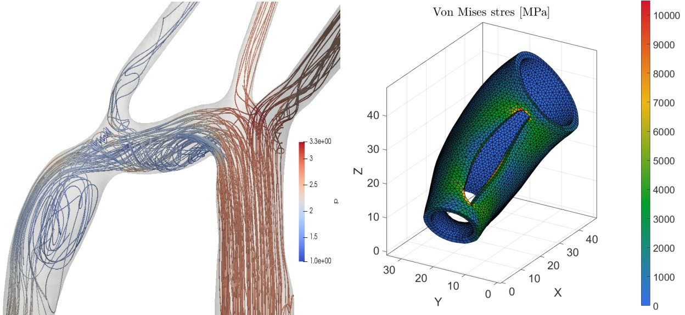
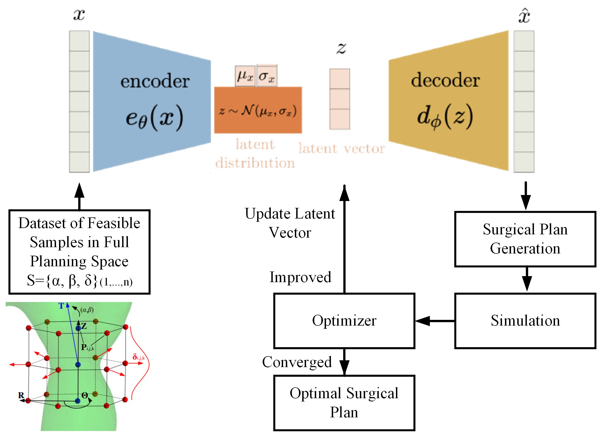
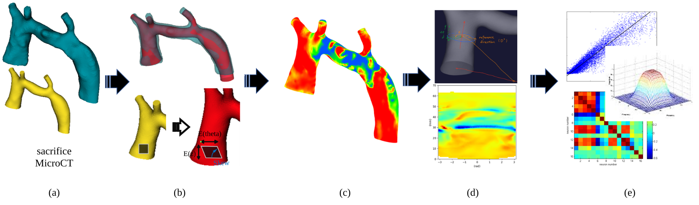
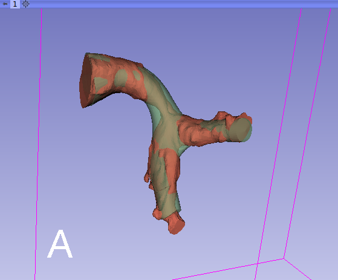

Planning and Optimization of Cardiac Surgery
Automatic Optimization of Patient Specific Graft Design
The ideal shape of cardiovascular graft is highly patient specific for optimal hemodynamic performance. As manual design optimization involves time consuming trial-and-error process to achieve suboptimal hemodynamic performance, automatic design optimization of patient-specific graft is an interesting topic for clinical need. In this study we tried to speed up the process while preserving best simulation fidelity and expending parameter space.
Simulations for Automatic Optimization
My contribution for this part is to build fully automated simulation system that can seamlessly integrate with optimization algorithms. A fully automated system for hemodynamic simulation was established using OpenFOAM, including meshing, computing and postprocessing. Besides, a FEA system for vessel deformation is built using FEBio, for the optimization of cutting line and patch shape in patch-repair surgery.

Figure: Left: CFD of Coarctation of Aorta without repair; Right: FEA of vessel deformation during patch repair surgery.
VAE for Design Space Reduction
One impede of fast optimization is that high fidelity pulsatile simulation takes time. To reduce the dimension of parameter, a variational autoencoder would be tried to compress planning space into a more efficient latent space. After training VAE on generated dataset with geometrical constraints, the optimizer would directly change the value in latent space to proceed iterations.

Figure: Schematic description of the role of VAE in the optimization process.
Data Driven Study on Tissue Growth of TEVG
Grafts in current surgical process do not grow with child patients and thus revision or replacement is required. Tissue engineered vascular grafts (TEVGs) let the patient’s own cells proliferate and provide physiologic functionality and growth over time. But the growth pattern and rate are subject to local hemodynamics, which would affect the long term effect of the graft. This study aims to find the relationship between tissue growth on TEVG and local hemodynamics.
Figure: Framework for tissue growth analysis. (a) Reconstruction of post-operation and follow-up anatomy; (b) Deformable registration and tissue stretch calculation; (c) Tissue growth map; (d) Unfolded vessel wall to 2D domain; (e)Tissue growth analysis in comparison with WSS (Regression, Windowing and Convolution, Mutual Information)
Mapping 3D Wall Shear Stress to 2D
A bijective mapping from (x, y ,z) to (z, θ) is established as described in the above figure part (d), which allows pattern learning in 2D space.
Deformable Registration
The deformable registration is implemented onto post-operative and follow-up vessel geometries, based on a distance map method with B-spline characterization. Tissue growth would be calculated from the output transformation.
Figure: Example of registration between designed graft and post-operative geometry
© Wu,Qiyuan. All Rights Reserved. Designed by HTML Codex